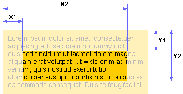

Свойство clip определяет область позиционированного элемента, в которой будет показано его содержимое. Всё, что не помещается в эту область, будет обрезано и становится невидимым. На данный момент единственная доступная форма области - прямоугольник. Свойство clip работает только для позиционированных элементов, у которых свойство position задано как absolute или fixed. Значение по умолчанию - auto, свойство не наследуется, применяется к блочным элементам, анимируется
В качестве значений используется расстояние от края элемента до области вырезки, которое задается в единицах CSS — пиксели (px), em и др. Если край области нужно оставить без изменений, следует установить auto, положение остальных значений показано ниже.
clip: rect(Y1, X2, Y2, X1) | auto
Internet Explorer до версии 7 включительно работает с другой формой записи, при которой значения координат разделяются между собой пробелом, а не запятой.
clip: rect(Y1 X2 Y2 X1) | autoСвойство clip определяет область позиционированного элемента, в которой будет показано его содержимое. Всё, что не помещается в эту область, будет обрезано и становится невидимым. На данный момент единственная доступная форма области - прямоугольник.
<div class="example">
<p>Свойство <samp class="red">clip</samp>...</p>
</div>
.example {
width: 520px;
position: absolute;
animation:myAnimation 8s infinite;
}
@keyframes myAnimation {
0% {clip:rect(auto, 0, auto, 0);}
20% {clip:rect(auto, 520px, auto, 0);}
80% {clip:rect(auto, 520px, auto, 0);}
100% {clip:rect(auto, 0, auto, 0);}
}